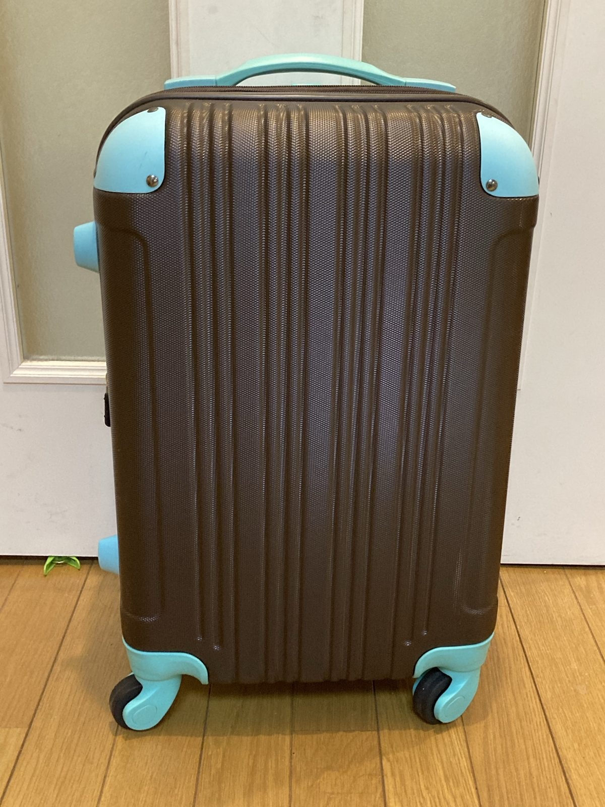

子持ち専業主婦がスーツケース暮らしをしてみたい(1)
詩ミニマリスト に憧れていても、家族がいると同意がなければミニマリスト にはなれません。
しかも子供がいるとなると、ゲームやおもちゃ、ぬいぐるみ、園のあれこれや学校のあれこれ、とにかく荷物が多い。
けれどスーツケース暮らしへの憧れが諦められず、自分の荷物だけでもスーツケース暮らし化しようと思い立ちました。
まず考えたのは、スーツケースに入れる荷物はなんだろうか、ということ。
生活を維持できることが条件で、自分の持つ荷物を考えました。
出番の少ない入学式や卒業式に必要なフォーマル、喪服、結婚式などのお呼ばれドレスはカウントしないことにしました。
趣味のミシン、手芸道具もカウントしないことにします。
本は考えましたが、最低限のお気に入りだけに減らして、本棚に置いておくのでカウントしません。
だいたい決まったところで、下準備は完了。
1番多いのは洋服！わたしは双極性障害で、躁のときに買った服が山のようにありました。
こんなに捨てるなら買わなければよかった…お金がもったいないし服にも申し訳ない。躁はおそろしい。
洋服はスーツケースの中でも一番かさばるので、よく考えなければいけない気がします。
おしゃれも楽しみたいし、荷物も少なく済みたい。
まるで旅行に行く時のようなワクワク感。
スーツケース暮らしまでの道のりは遠い…まだまだ続きます。